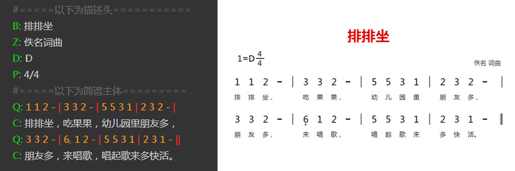

番茄脚本，全程是番茄简谱脚本，是由我们参考国外流行的ACB记谱法，同时结合简谱的特性所设计的一套简谱脚本。
简单的说，番茄脚本就是通过普通的文本的形式，将简谱完整的描述出来的一种规范。
通过番茄脚本，可以快速的将一篇简谱录入到计算机中处理。
番茄脚本的结构
一个完整的番茄脚本，应由描述头和简谱主体构成。
描述头：主要是记录一些简谱的基础信息，像标题、词曲作者、调式、拍号、拍子等。
简谱主体：记录着每一行的词和曲的信息。
一个简单的示例：

上图中，左侧是一个简单番茄脚本。右侧是将其导入到相应软件后得到简谱图片。
这是一个非常简单是示例，当然在实际应用中还会更跟复杂的谱子出现，但是番茄脚本已经解决了大部分的需求，包括各种符号和多声部的输入等。具体请参看本手册的相应章节。
番茄脚本的优点：
1、速度快，当您熟练以后，将实现以打字的速度录入简谱，比使用其他简谱软件排版快的多。
2、编写方便，只要能够输入文本的编辑器都可以编写（记事本、Word、手机编辑器）。
3、通过相应软件，可以很方便的生成高质量的简谱图片或MIDI音频，同时分享到互联网中。